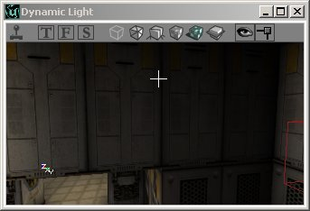
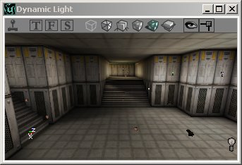

UDN
Search public documentation:
UsingLightsJP
English Translation
한국어
Interested in the Unreal Engine?
Visit the Unreal Technology site.
Looking for jobs and company info?
Check out the Epic games site.
Questions about support via UDN?
Contact the UDN Staff
한국어
Interested in the Unreal Engine?
Visit the Unreal Technology site.
Looking for jobs and company info?
Check out the Epic games site.
Questions about support via UDN?
Contact the UDN Staff
ライトの使用法方
ドキュメントの概要: ライトおよびライトに関連した機能の使用法方の一般ガイド ドキュメントの変更ログ: Jason Lentz(DemiurgeStudios)により最終更新。文書を管理しやすい量に整理｡原作者 - Lode Vandevenne(Udnスタッフ)はじめに
ここではライティングの基本を知ることができます。ライトの設置方法、また、レベル内で簡単で正確にライティングを評価できるさまざまな機能について説明します。ライトの追加
まず初めに、ライトを追加する十分なスペースを作成します。スペースができたら画面のどこかを右クリックすると、メニューに [Add Light Here](ここにライトを追加) が表示されます。その近くに小さな電球の絵が現れます。それがライトソースです!

 ライトを追加するショートカットキーもあります。[L]キーを押し続け、画面上で左のマウスボタンを押すとライトが追加されます。
ライトが希望の場所にない場合は、アクタを移動するようにどこにでも移動できます。
ライトを追加するショートカットキーもあります。[L]キーを押し続け、画面上で左のマウスボタンを押すとライトが追加されます。
ライトが希望の場所にない場合は、アクタを移動するようにどこにでも移動できます。
Radii View (半径ビュー)
ツールバーの [viewport](ビューポイント) - [Actor](アクタ) - [Radii View](半径ビュー)を右クリックすると、このオプションをオンにできます。半径を示すライトの周りに赤い円が表示されます。これは3Dビューでも作動します。通常ではライト球は端が暗くなるので円より小さく見えますが、ライト効果が[NonIncidence](インシデンスなし) になっている場合に限っては同じになります。

3D ビューモード
Dynamic Lighting(ダイナミック ライティング）モードに3D ビューがある場合、ライトの周りに追加したウォールが明るくなっているのに気づくはずです。3Dビューには異なるモードがあり、それらのいくつかはライトでの作業に重要です。それらを選ぶには3D ビューの上部にあるボタンを使用します。下のスクリーンショットで薄く緑がかったボタンは、このモードをアクティブにするものです。マウスのカーソルをボタン上部に数秒止めると、ボタンの名前が黄色く表示されます。 Textured(テクスチャ化): マップの全てのウォールを最高輝度にし、全てのライティングを無視します。ゲーム内ではウォールはこのようには表示されません｡ジオメトリを先にするためマップにライトを追加していないか、またはライトにより暗すぎるか過度に色づけされたウォールのオリジナルのテクスチャをチェックしたい場合、このモードを使用できます。 Dynamic Light(ダイナミック ライト): マップを全てのライティングで表示します。ライトをリビルトしてまったく追加していない場合は、ただ黒く見えます。このモードはライティングが実際のゲーム内でのように見えるので、マップのライティングの作業をする時は常にこのモードを使用します。
Dynamic Light(ダイナミック ライト): マップを全てのライティングで表示します。ライトをリビルトしてまったく追加していない場合は、ただ黒く見えます。このモードはライティングが実際のゲーム内でのように見えるので、マップのライティングの作業をする時は常にこのモードを使用します。

Realtime Preview(リアルタイム プレビュー): あらゆるビューポートでこのスイッチのオン/オフができます: 画面の上部にある小さなジョイスティックのようなボタンをクリックするか、ビューを選択し、[P]キーを押してください。エディタのメインツールバーのジョイスティックは押さないでください。マップをテストするためにゲームが開始してしまいます｡ビューがリアルタイム プレビューである場合は更新がリアルタイムで行われるので、1つのビューで更新すると、他のビューでもその変更が見られます。しかしこれによりエディタの処理は遅くなります。このモードについてもう1つ重要なことは、アニメーションがちらついた光のように見えるか、アニメ化されたテクスチャに見えるということです。リアルタイム プレビューがオフな場合、ダイナミック ライティング効果がどう3Dビューでアニメ化するかを見ることができません。ゾーン ポータルや他の不可視のポリゴンは、このモードではさらに不可視になります。 Lighting Only(ライトニングのみ): これは、全てのウォールを白くし、lighting effect(ライトニング効果) をこれに表示します。
Lighting Only(ライトニングのみ): これは、全てのウォールを白くし、lighting effect(ライトニング効果) をこれに表示します。

ゲーム設定
[F10], [F11] と[F12]キーで 画面の Gamma(ガンマ)、 Brightness(明るさ) や Contrast(対照) が各自切り替えられます。これは、エディタやゲームで作動します。また、[Advanced Options](詳細オプション)-[Display](表示) でもこの設定を変えることができます。Advanced Optionsをひらくにはメニューの [View](ビュー)、そして [Advanced Options] を選択します。 プレイヤーはいろいろな設定ができるので、ユーザーの方のマップがとても暗くみえても、相手のプレイヤーにはとても明るく見えていることがあるということを覚えておいてください。マップでの明るさと暗さの違いのみ決して変わりません。リビルド
ライトバルブを追加した場合、すでにいくつかのライトが見えますが、最終的にはジオメトリとライティングをリビルドする必要があります。まず最初にジオメトリをリビルトします。そうでないとライティングのリビルドがうまくいきません。ジオメトリをリビルドするには、UnrealEd の上部のツールバーにあるボタンを押します： ジオメトリをリビルドすると、全てのウォールは最高輝度になります。ライティングを戻すには、ライティングをリビルドしなければなりません。UnrealEd の上部のツールバーにあるこのボタンを押します：
ライティングをリビルドするには、UnrealEd の上部のツールバーにあるこのボタンを押します：
ジオメトリをリビルドすると、全てのウォールは最高輝度になります。ライティングを戻すには、ライティングをリビルドしなければなりません。UnrealEd の上部のツールバーにあるこのボタンを押します：
ライティングをリビルドするには、UnrealEd の上部のツールバーにあるこのボタンを押します：
 ウォールやオブジェクト上のライティングやシャドウを作成するため、それぞれのライトソースからライトを光線でトレースします。このトレースは大きいマップだと数分かかります。マップの構造やジオメトリのみで作業をしている場合、ライティングをリビルドしたり、 [Build All](全てをビルド）ボタンを使用しないでください。マップのライティングで作業している場合は、これは重要です。
変更したライトのみをリビルドするには、[Rebuild Changed Lights](変更したライトをリビルド）ボタンを使用します。すでにリビルトされているライトをリビルトしないので大変早く処理できます。新しくライトを追加した場合、これを作動させるにはまずジオメトリをリビルドする必要があります｡
ウォールやオブジェクト上のライティングやシャドウを作成するため、それぞれのライトソースからライトを光線でトレースします。このトレースは大きいマップだと数分かかります。マップの構造やジオメトリのみで作業をしている場合、ライティングをリビルドしたり、 [Build All](全てをビルド）ボタンを使用しないでください。マップのライティングで作業している場合は、これは重要です。
変更したライトのみをリビルドするには、[Rebuild Changed Lights](変更したライトをリビルド）ボタンを使用します。すでにリビルトされているライトをリビルトしないので大変早く処理できます。新しくライトを追加した場合、これを作動させるにはまずジオメトリをリビルドする必要があります｡

ライトの調節
メニューの[Tools](ツール)には[Scale Lights](ライトの調節) と呼ばれるツールがあります。これは複数のライト、または全てのライトの明るさを一度に調節します。 ライトを１つ選択し、[Light Properties](ライト プロパティ) を開き、[LightColor](ライト カラー)を拡張します (これをする必要はありませんが、することにより値が変化しているのを見ることができます）。メニューの[Tools]にある[Scale Light](ライトの調節)を開きます。 そこでリテラル値[100]を入力します。ライト プロパティに[LightBrightness](ライトの輝度)が見えることを確認してください。ライトの調節ウィンドウの[OK] を押し、ライトの明るさが変わったことを確認してください。[OK] を押すたびに100ごとに明るくなります。
100％を入力すると、[OK] を押すごとに[LightBrightness]は ２倍になります。50 ならば1.5倍、20 ならば1.2倍などです。
また、ライトを暗くするため負の値も入力できます。
このツールの利点は、２個以上のライトを選択した場合でも、LightBrightnessは個々に計算される点です。ひとつのライトの明るさが 50 で他のものが 80 で、リテラル値 20 を入力した場合、最初のライトの値は 70 に、もう一方の値は 100 となります。
このツールはそれぞれ違ったLight Brightnessがスペースにある場合に、全てを少し明るくしたい時にとても役に立ちます。全てを選択してこのツールを使用してください。
ライトを１つ選択し、[Light Properties](ライト プロパティ) を開き、[LightColor](ライト カラー)を拡張します (これをする必要はありませんが、することにより値が変化しているのを見ることができます）。メニューの[Tools]にある[Scale Light](ライトの調節)を開きます。 そこでリテラル値[100]を入力します。ライト プロパティに[LightBrightness](ライトの輝度)が見えることを確認してください。ライトの調節ウィンドウの[OK] を押し、ライトの明るさが変わったことを確認してください。[OK] を押すたびに100ごとに明るくなります。
100％を入力すると、[OK] を押すごとに[LightBrightness]は ２倍になります。50 ならば1.5倍、20 ならば1.2倍などです。
また、ライトを暗くするため負の値も入力できます。
このツールの利点は、２個以上のライトを選択した場合でも、LightBrightnessは個々に計算される点です。ひとつのライトの明るさが 50 で他のものが 80 で、リテラル値 20 を入力した場合、最初のライトの値は 70 に、もう一方の値は 100 となります。
このツールはそれぞれ違ったLight Brightnessがスペースにある場合に、全てを少し明るくしたい時にとても役に立ちます。全てを選択してこのツールを使用してください。